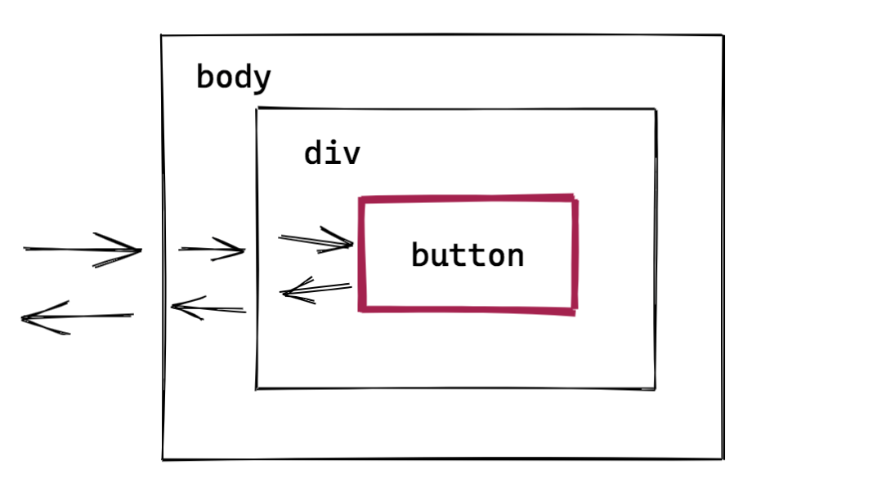

注册事件addEventListener用法
target.addEventListener(type, listener, useCapture = false)
target.addEventListener(type, listener, options)
listener: 回调函数 // 或者实现了EventListener接口的对象
/**
options: {
once：只执行一次
passive：承诺此事件监听不会调用 preventDefault，这有助于性能。
useCapture：是否捕获（否则冒泡）
}
**/
`删除绑定的事件 removeEventListener
target.removeEventListener(type, listener[, options]);
target.removeEventListener(type, listener[, useCapture]);listener一定要与addEventLinstener的listener相同
dom0事件处理程序
let btn = document.getElementById("myBtn");
btn.onclick = function() {
console.log("Clicked");
};
btn.onclick = null; // 移除事件处理程序
<input type="button" value="Click Me" onclick="console.log('Clicked')"/><ul id="myLinks">
<li id="goSomewhere">Go somewhere</li>
<li id="doSomething">Do something</li>
<li id="sayHi">Say hi</li>
</ul>
const item1 = document.getElementById("goSomewhere");
const item2 = document.getElementById("doSomething");
const item3 = document.getElementById("sayHi");
item1.addEventListener("click", (event) => {
location.href = "http:// www.wrox.com";
});
item2.addEventListener("click", (event) => {
document.title = "I changed the document's title";
});
item3.addEventListener("click", (event) => {
console.log("hi");
});const list = document.getElementById("myLinks");
list.addEventListener("click", (event) => {
const target = event.target;
switch(target.id) {
case "doSomething":
document.title = "I changed the document's title";
break;
case "goSomewhere":
location.href = "http:// www.wrox.com";
break;
case "sayHi":
console.log("hi");
break;
} });target currentTarget
阻止事件传播 event.stopPropagation()
无论是捕获阶段还是冒泡阶段，均可阻止
与stopImmediatePropagation()的区别，stopImmediatePropagation = 阻止调用后续事件处理程序 + stopPropagation
* IE8及以下只有冒泡，因此 window.event.cancelBubble = true 只能阻止冒泡
阻止默认行为 event.preventDefault()
属性 event.defaultPrevented
常见的默认行文
* a标签
* checkbox
* 输入框
* 表达默认提交// 1. 生成事件对象实例 const evt = new MouseEvent('click')
// 2. 触发事件 target.dispatchEvent(evt);// 1.生成事件
var event = new Event('build'); // 如果想要传参的话，new CustomEvent('build', { 'detail': elem.dataset.time });
// 2.监听事件
elem.addEventListener('build', function (e) { ... }, false);
// 3.触发事件
elem.dispatchEvent(event);pointer-events: none; // 比如加一层护眼遮罩 touch-action: none
var EventUtil = {
addHandler: function(element, type, handler) {
if (element.addEventListener) {
element.addEventListener(type, handler, false);
} else if (element.attachEvent) {
element.attachEvent("on" + type, handler);
} else {
element["on" + type] = handler;
}
},
getEvent: function(event) {
return event ? event : window.event;
},
getTarget: function(event) {
return event.target || event.srcElement;
},
preventDefault: function(event) {
if (event.preventDefault) {
event.preventDefault();
} else {
event.returnValue = false;
}
},
removeHandler: function(element, type, handler) {
if (element.removeEventListener) {
element.removeEventListener(type, handler, false);
} else if (element.detachEvent) {
element.detachEvent("on" + type, handler);
} else {
element["on" + type] = null;
}
},
stopPropagation: function(event) {
if (event.stopPropagation) {
event.stopPropagation();
} else {
event.cancelBubble = true;
}
}
};本节常见面试题目：
什么是事件传播?
什么是事件冒泡？
什么是事件捕获？
event.stopPropagation() 和 event.stopImmediatePropagation()方法之间有什么区别？
如何知道是否在元素中使用了event.preventDefault()方法？
mouseover和mouseenter两个事件有什么区别？
Event对象中，target和currentTarget的区别？
说一说什么是事件冒泡，如何阻止事件冒泡？如何阻止默认事件？ 是否了解事件委托？
css3中有哪些属性可以直接影响JS中的事件？（可以讲一下pointer-events和touch-action属性吗）
输入框最多只能输入六个字符，如何实现？